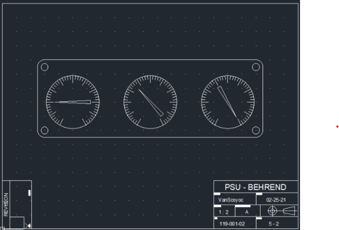
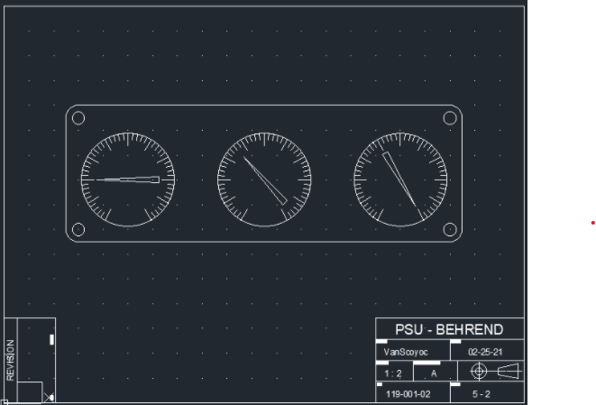

My Classwork
This page is designed to show off some of my accomplishments and school work that I have completed through my classes at Penn State Behrend.
CMPET 211: Coding in C
In my CMPET 211 class, we learned how to code in C as well as build various electrical circuits. Using both
of these in combination we were able to accomplish multiple different projects assigned to us, that were
mainly self guided projects.
Here is one example of how we had to design and streamline the code for a 7 segment, as well as design and
build the 7 segment electrical circuit. 7 segment displays are essentially the inner workings of an alarm clock,
as well as many other clocks/number displays. Learning how to both code and build one of these from
scratch was very interesting, and I enjoyed getting to see how these worked.
CMPSC 121: Coding in C++
This is just an example as to how I take my notes for my coding classes. I try to keep my notes well organized
so that while I’m coding I can very easily access different commands and functions, which allows me to code
and learn how to code a lot faster.

EGT 119: AutoCad
Here are a few simple drawings I’ve completed so far in my EGT 119 (AutoCad) Class.
 

Contact information:
- Adam V
- ajv5401@psu.edu
- 9:00AM-5:00PM M-F